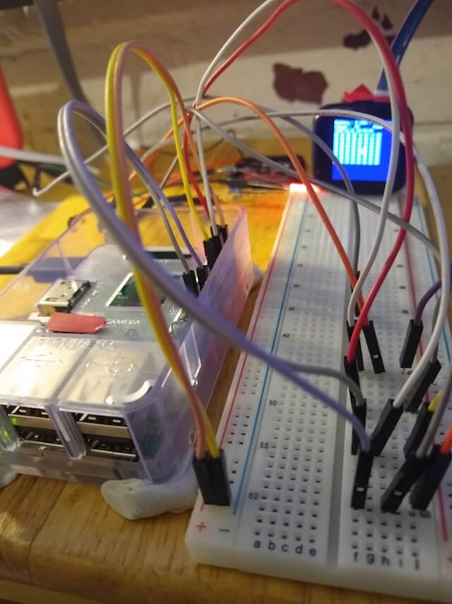

#^_blog_post_json
{
feed:{
attachments:[{"url":"https://ia601408.us.archive.org/17/items/ITStuff080120/itstuff080120.ogg","mime_type":"audio/ogg"}]
},
"title":"Episode 080120",
"author":"shi",
}
#^_blog_post_body
{blog_play}
{blog_bit_wrap}
#^blog_bit_wrap
{blog_bit}
#^blog_bit form=markdown
2020, what a flaming mess. Hello planet, this is IT Stuff, we’re here to defile another decade with unreliable opinions about technology and stuff.
#^blog_more form=markdown
PineTime Report
The PineTime requires you to programme your own clock to show the time; it doesn't have a real time clock as part of the hardware. This meant, if you were to lose charge and your batteries were depleted, the smartwatch will not be able to tell you what the current time was since you'll need to set it again.

It took a few many tries but we settled on this setup as the 'safest' way to connect to the PineTime. Jumper cables, tack, Raspbery Pi B+ v1.2 and a breadboard, all mounted on a chopping board.
As with all hardware projects, it is better to be safe and paranoid so it was timely that we bought 2 dev kits - one didn't seem to work when we connected it to an ST-Link/V2 serial wire debugger nor the raspberry pi via the SWD pins; it just refused to respond to any commands. We figured it never worked as a dev kit - possibly the debug pins were shorted but since it worked fine with the default firmware and as advertised (bluetooth and touchscreen was working), there is no way to find out, who knows?
You can find out more about developments on https://github.com/xriss/timecake.
#^media trim=ends
https://ia601408.us.archive.org/17/items/ITStuff080120/itstuff080120.ogg
#^mix
#^music_name
You Had Me At Easily Pleased by Spray
#^music_video
videoseries?list=PL38LwYBtzD1a9khcvuDTzkiAgXbrtSK2O
#^odtlink
https://github.com/meatstuff/itstuff/blob/master/odt/2020/itstuff080120.odt
#^odtname
itstuff080120
#^ogg_podcast
ogg
#^poster
it
#^show_date
9th & 10th January 2020
#^show_links
PineTime - An Open Source Smartwatch For Your Favorite Devices
PineTime - Specifications wiki
Post Office coughs £57.75m to settle wonky Horizon IT system case
Put the crypt into cryptocoin: Amid grave concerns, lawyers to literally dig into exchange exec who died owing $190m
Vladimir Putin 'still uses obsolete Windows XP' despite hacking risk
SpaceX satellites spotted over Derbyshire
Watch Elon Musk dancing at Tesla’s Gigafactory in China
AI system outperforms experts in spotting breast cancer
Amazon wants to patent technology that could identify shoppers by their hands
UK's first full-size 'driverless' bus tested in Glasgow
#^title trim=ends
{_blog_post_json.title}
#^script
BCB IT Stuff recording 8 January 2020 transmission 9/10 January 2020
[0 Min] 2020, what a flaming mess. Hello planet, this is IT Stuff, we’re here to defile another decade with unreliable opinions about technology and stuff.
There’s two more sentient bags of mostly water in here, one of them identifies as Kriss and the other one Shi. Dunno how they got in here, might as well go with it yeah? Let's kick off with Youtube news.
[2 Min] Youpoop [YOUPOOP] Two things to make you vomit, first we have Pewdiepie who is taking a break because he is very tired, and not because of people telling him he’s racist and antisemitic.
And second we have Ryan out of Ryan’s Toy Reviews. He’s 8 now and pulling down £17m a year and he’s renamed his channel Ryan’s World.
[6 Min] There’s a new king in the world of Fail and that’s the Great British Post Office. This is a story that's 20 years in the making.
An accounting system called Horizon kept losing money and more than 550 post office workers got done for fraud and even jailed. Well surprise, it was bugs all along. It’s ended up with paying a £58M out of court settlement.
[10 Min] Some quicky quickies, remember the cryptocoin guy who died suddenly having embezzled 190 million? They are digging him up.
And security news, there’s Travelex (word on the street is they failed to patch their Pulse Secure VPN since last April), and allegedly Vladimir Putin is still stuck on Windows XP, because reasons.
[13 Min] You’re half done with IT Stuff on BCB Radio 106.6fm, and when I say half done, I don’t mean software development half done. Cos that’s like you started in dog years and then the second half is like a giant tortoise. Quarter of an hour and we’re out of here mate. Gotta get on! World of Stuff!
[14 Min] World Of Stuff [WORLDOFSTUFF] It’s time for Pine Time!
We've got a couple of dev kits of the open source smartwatch based on Pine64 - there were a few 'teething issues' but here are some initial thoughts.
[18 Min] Singularity Watch [SINGULARITY] Three exciting developments, see if you can spot which one of the three will make the world better, you can play along at home!
First, Amazon has patented payments with punters palmprints.
Second, the UK’s first Driverless Bus has rocked up working between Fife and Edinburgh.
And third, Google Health has trained an image recognition system until it’s better than people at spotting breast cancer on mammograms.
[22 Min] Go Home Elon You're Drunk [HARAMBE] First, his vast fleet of new Interweb satellites continues to upset astronomers, including Tom Sparrow of Bradford Uni, who watched them ruin the night sky over the peak district.
And Elon turned up at his Tesla factory in Shanghai and did a weird dance on stage during which, well, clothing was removed! Here it is!
[25 Min] End music This is a long term IT Stuff favourite - Spray with ‘You Had Me At Easily Pleased’.